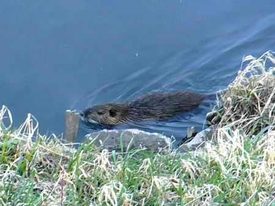
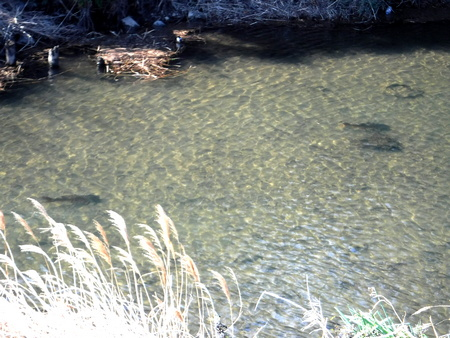
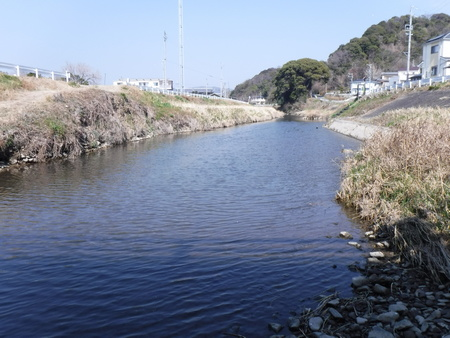
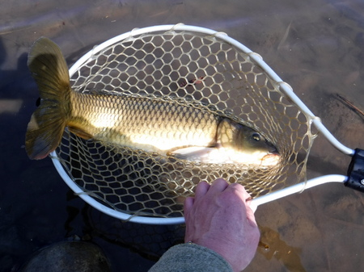
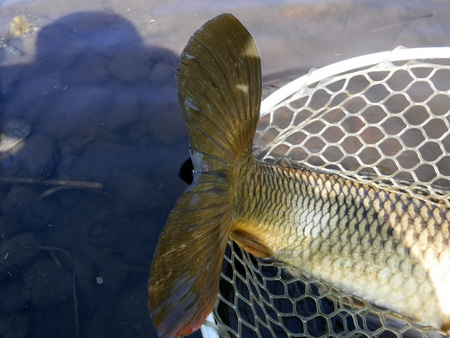
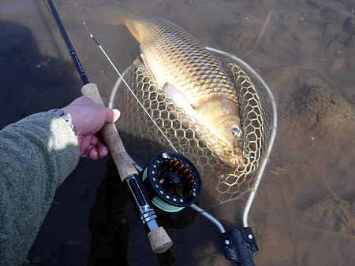

釣行日誌 故郷編
2021/02/21 今日に限って
昨日、仕事で訪れた町で、駅までの帰り道を、ブラブラと魚影を探しながら歩いた。
すると、小型の犬ほどの大きさをした謎の動物が水辺を徘徊している。そばを通りかかった地元の人の言うには、ヌートリアだそうだ。名前は知っていたけれど、実物を見るのは初めてだ。外敵がいないのか、悠々とあたりを泳ぎ回っている。
一瞬、ニホンカワウソ？ と思ったが、そんなことは無い。（笑）

『ははぁ、いますねいますね。』
コイの魚影もたくさん見えた。いつも通っているニゴイの釣り場と比べ、各段に多くのコイが居る。

と、いうことで、今日はその川へ、お弁当と商売道具をカブに積んで出撃した。畑仕事用のゴム長靴とバイク用レインスーツのズボンというお気楽モードの格好である。デイパックの代わりに買い物用のマイバッグに荷物一式を詰めてある。
いつものニゴイ釣り場よりは少し近いので、カブでのんびりとツーリング気分、朝７時に出発した。さすがに２月、朝はまだ寒い。
少し迷ったけれど、50分かかって現地に到着。
便利に整備された都市河川の階段護岸を降りて、下流へと、ススキや葦の生い茂る河川敷を踏み分けて歩いて行く。昨日の偵察で、めぼしいポイントは絞り込んであるのだ。朝露で雨具のズボンが濡れる。
お目当てのポイントに着いた。あまりの水の汚れに、水温計を水に入れることがはばかられる。
リーダーには 4X,12ft を結び、だいぶ先を縮めてからフロロの８ポンドモノフィラメントをつなぐ。
最初のフライは、ダイソーで買ったカラフルなフェルトボール？をフックに刺して、瞬間接着剤で留めただけの超簡単エッグフライの赤、特大サイズ。その上 15cm の位置にカミツブシのオモリ。一応インジケーターも付けた。
深みで魚影を探すが、水深があり、見通しが悪く、なかなかスポッティングできない。
とりあえず流れの真ん中にフライを打ち込んで、じっと待っていると、偶然足元によってきた中型のコイがエッグフライ特大を咥えた。すかさず合わせ、ギュンとロッドがしなる。しかしバレた。実に悔しい。エッグの部分が大きいので、フッキングが悪いのかもしれない。
慎重に偵察しながら遡行してゆくと、上流の淵には何匹もいる。巨大な金魚も。しかし、釣れない。
目視できたターゲットは20尾以上だが、なにせ狙撃兵の腕が悪いので、驚かせて逃げられてばかり。米粒大のオモリが着水しただけで一目散に遁走する。中層・表層には決して出てこず、ひたすら底をつついている。
『連中がドライフライに出てくれたらなぁ.....』
橋を越えたところの淵尻、瀬が始まるあたりで、数匹見つけた。ゆっくりと左右に動いて川底の餌を漁っている。

一番下流の１尾は見捨てて、２番目を狙うことにする。
間違って、濡れた毛に包まれた哺乳類がどこからか現れて喰いつくことを恐れつつ、対岸のヘチに居た大型の雑食性魚類に、黒ボディラメ入りのウーリーバガーを投じてみる。
運良く進行方向左45度、約１メートル前方に着水したストリーマーを引いて、泳いで来るコイの目の前に据える。一応アタリが判るようにインジケーターは付けているが、異物は数秒で吐き出すので、なかなか反応がわからない。
幸運にもこの１尾は、見える深さでウーリーバガーを吸い込んだように見えたので、当てずっぽうでラインを引くと、ズシンと重い手応えが！
『乗った！』
その後はジャンプも捻転も無く、ひたすら重い、流木との綱引きのようなファイトが続いた。
やっとのことで寄せてきて、ヨイショッとネットですくい上げた。しかしよく引いた。人影を見てからフタ暴れもしたし！
バーブレスフックでも、何とかバラさずに釣り上げることができた。


さらに少し上流の長細い淵で、より太った２尾目をキャッチした。けれどなぜか最初のコイよりも引きが弱く、あまり走らなかった。

大物が釣れた時のために、魚をネットに入れたままで重量を量れるバネ秤をこの間通販で買った。せっかくだから、ニュージーランドのブリントさんに自慢しようと重さを計ろうと、荷物の中を探したが、"今日に限って" 忘れてしまった。ユーミンの歌みたいだ。履いていたのは安いサンダルではなく、安いゴム長だったが。（笑）
「ゴミの不法投棄禁止！」 の看板はあったけど、魚釣り禁止 の立て札は無かったので、初めて行ってみた今日の川。また来るとしよう。
地元のおじさんに怒られることもなく、異常な陽気の日曜日が終わった。
釣行日誌 故郷編 目次へ
サイトマップ
ホームへ
お問い合わせ